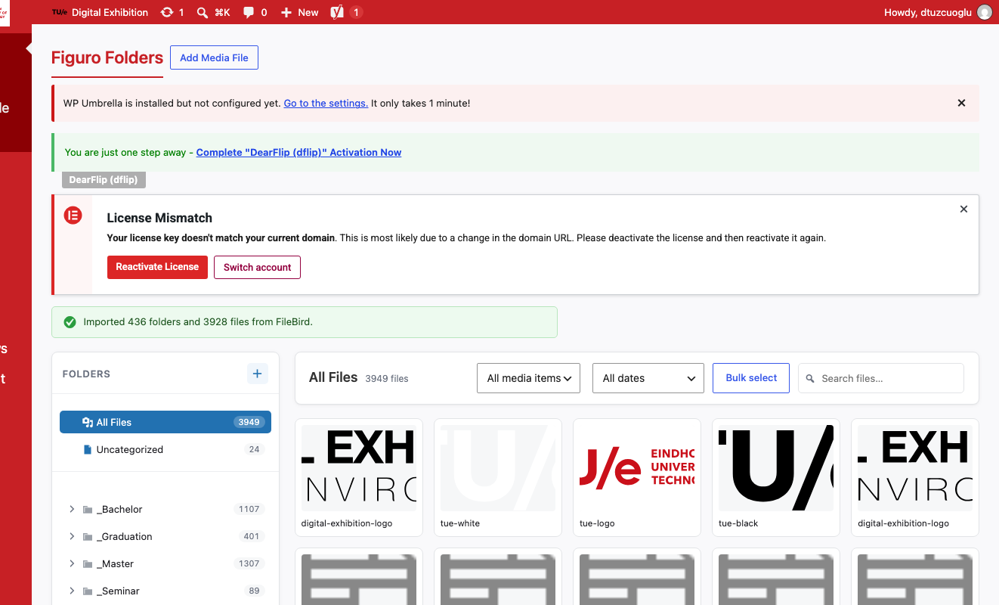
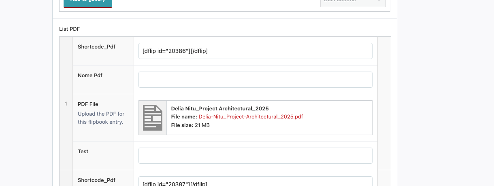
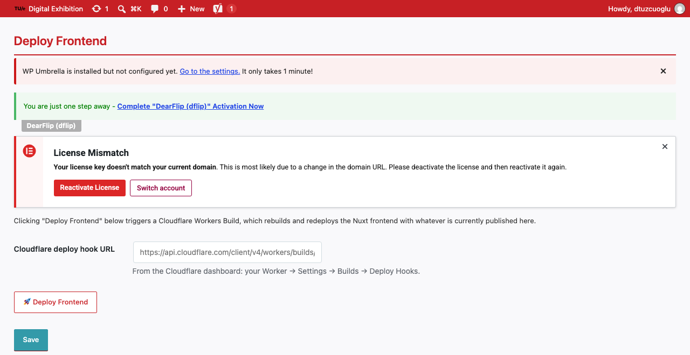

TU/e — Built Environment, Digital Exhibition platform
Working with the new system
A short guide for editors: organising media, attaching PDFs, and publishing changes live.
WordPress is still where all content is written and edited — nothing changes about how you log in or write a project, course, or seminar entry. What's new is where media lives (a new folder plugin), how PDFs are attached (directly, not via a shortcode), and how changes go live (a manual "Deploy Frontend" step, since the public site is now a separate, pre-built front-end rather than WordPress rendering pages directly).
Organise media
Use folders in the Media Library, same as before.
Attach the PDF
Upload it to the "PDF File" field — no shortcode needed.
Deploy Frontend
Click the button, wait 5–10 minutes, changes are live.
Editors
1. Media library — Figuro Folders
Media → Folders now runs on Figuro Folders, a free plugin that replaces FileBird Pro and works the same way you're used to: a folder tree on the left, drag-and-drop files, one item can live in one folder. Nothing about how you organise media day-to-day has changed.
The switch was made because FileBird Pro required a paid licence to keep working; Figuro Folders does the same job for free. Every existing folder and file assignment was migrated automatically — see the green confirmation banner in the screenshot below ("Imported 436 folders and 3928 files from FileBird").

- Folders and file assignments carried over 1:1 from FileBird — nothing to redo.
- Upload new files the same way, then drag them into the right folder.
Editors
2. Attaching a PDF to a project
Every project, course, and seminar entry has a "List PDF" section for each student's flipbook PDF. Each row still shows an old "Shortcode_Pdf" field (e.g. [dflip id="20386"][/dflip]) — that's left in place only as a reference to the old system and can be ignored.
To add or replace a PDF, use the "PDF File" field below it instead: click it, pick the file from the Media Library (or upload a new one), and you're done. No shortcode, no PDF id to look up — the file itself is now what drives the flipbook on the front-end.

- Leave the old shortcode field exactly as it is — you don't need to edit or clear it.
- The "PDF File" field shows the attached file's name and size once uploaded (e.g. Delia-Nitu_Project-Architectural_2025.pdf, 21 MB), so you can confirm the right file is attached at a glance.
- Keep PDF file names clean and distinct (e.g. Student-Name_Project-Title_Year.pdf) — the front-end shows each PDF's filename as its caption.
Editors
3. Publishing changes — Deploy Frontend
This is the one genuinely new step. The public Digital Exhibition site is no longer WordPress rendering pages directly — it's a separate front-end that's built once and then served statically. That means edits made in WordPress (a new project, a swapped PDF, a text fix) are not live automatically.
Make as many changes as you like in WordPress first. When you're ready for visitors to see them, go to Settings → Deploy Frontend and click the "Deploy Frontend" button. This triggers a rebuild of the whole site; it takes roughly 5–10 minutes to finish, after which your changes are visible on the live site.

Rule of thumb
Batch your edits, then deploy once — not once per field. Editing in WordPress is instant and safe to repeat; each deploy takes several minutes, so there's no need to click it after every single change.
- The "Cloudflare deploy hook URL" field is pre-configured — you don't need to touch it, just press the button.
Quick reference
| Task | Where | Notes |
|---|---|---|
| Organise media into folders | Media → Folders | Same behaviour as the old FileBird Pro, now on a free plugin (Figuro Folders). |
| Attach a PDF to a project | Project/Course/Seminar editor → List PDF → PDF File | Upload/select the file directly. Ignore the old Shortcode_Pdf field. |
| Publish changes to the live site | Settings → Deploy Frontend | Click "Deploy Frontend", wait ~5–10 minutes. |